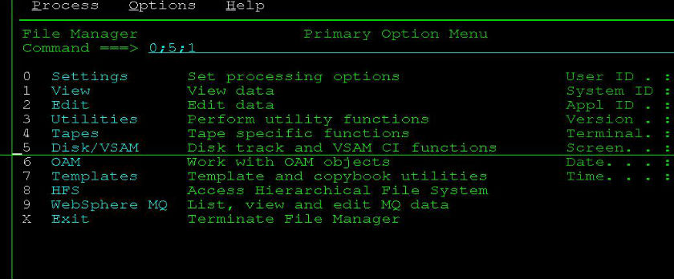

这篇文章就来说下在大机上如何利用IBM File Manager来查看copybook的结构，特别是每个字段的起始位置。
1.在Command栏输入0;5;1 设置自动检测语言
这样，不论你的copybook是PLI的还是COBOL的，FileManager都能自动检测出来。


2.设置好之后，进入3；13 (Utility->Copybook)

这里填写copybook的路径和member名，member栏也可以不写:

接着就能查看copybook内容了，特别是查看某个字段起始位置的时候特别有用。